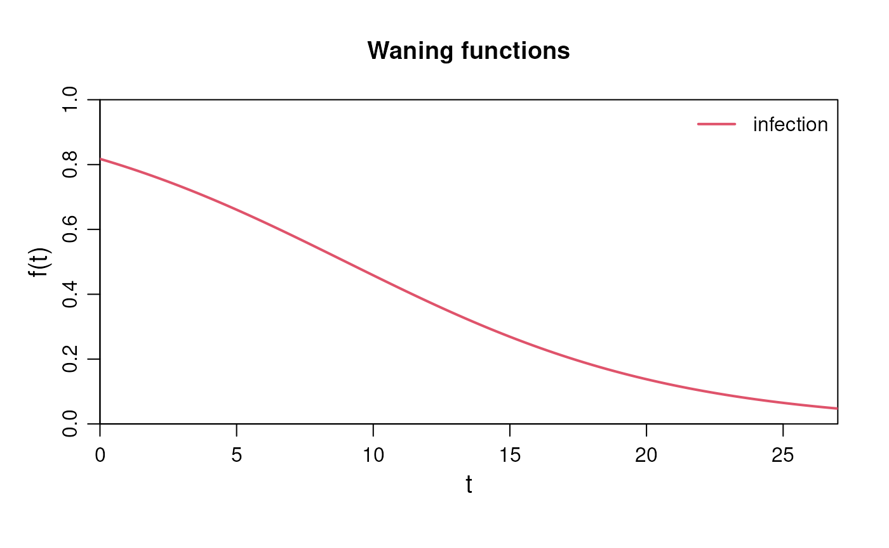
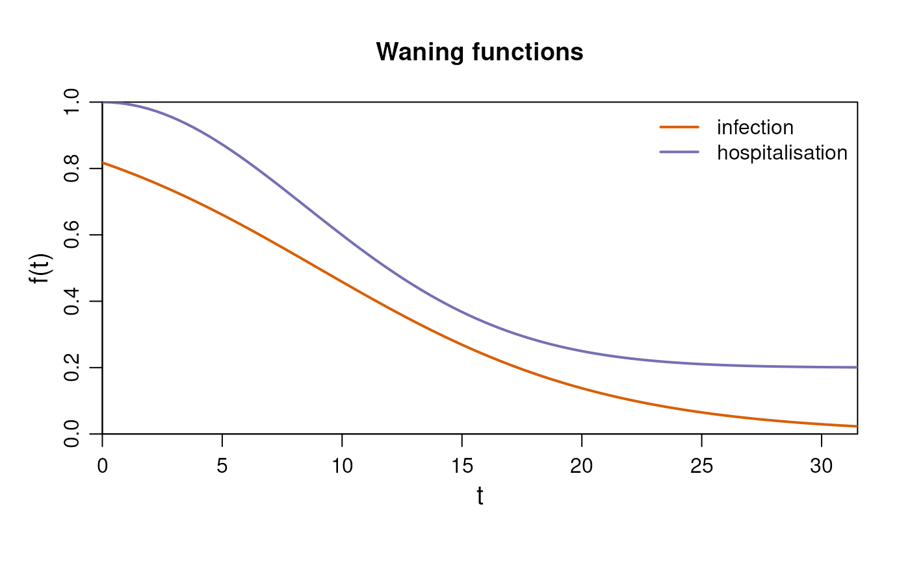

library(diseasy)
#> Loading required package: diseasystore
#>
#> Attaching package: 'diseasy'
#> The following object is masked from 'package:diseasystore':
#>
#> diseasyoptionIntroduction
The ?DiseasyImmunity is a module designed to implement
various models for the waning of immunity against a disease.
Configuring the module
The module can be initialized without setting any parameters, with the following code:
im <- DiseasyImmunity$new()Inspecting the module
By default, the module initializes with the no_waning
model (that is, constant, full immunity) stored under the target
“infection”.
To check the currently set targets and associated models, you can use the following code.
im$model
#> $infection
#> function (t)
#> 1
#> <environment: 0x55e47a613938>
#> attr(,"name")
#> [1] "no_waning"This returns a named list() where the named target are
modelled by the corresponding function.
To see the available waning models within the module, query the module as shown below:
im$available_waning_models
#> [1] "custom_waning" "exponential_waning" "heaviside_waning"
#> [4] "linear_waning" "no_waning" "sigmoidal_waning"Setting a waning model in the module
The input for the predefined waning models include:
-
target: The specific aspect towards which immunity is waning, such as “infection”. -
time_scale: A characteristic time scale, which defines the period until when the immunity is significantly waning. Note that theno_waningmodel does not have a time scale parameter.
The name of the chosen target is arbitrary within the context of the
?DiseasyImmunity module, but models within the
diseasy framework may expect named targets such as
“infection”, “hospitalisation”, or “death”.
Here is an example of how to set the exponential waning model.
im$set_sigmoidal_waning(time_scale = 9, target = "infection")
#> $infection
#> function (t)
#> exp(-(t - time_scale)/shape)/(1 + exp(-(t - time_scale)/shape))
#> <environment: 0x55e47bd26188>
#> attr(,"name")
#> [1] "sigmoidal_waning"
#> attr(,"dots")
#> attr(,"dots")$time_scale
#> [1] 9
#>
#> attr(,"dots")$shape
#> [1] 6To inspect that the model has been set correctly use
im$model
To visualize the model, the plot function provided by the module can be used:
plot(im)
Besides the predefined functions, you can also create a custom waning function.
The input for the custom waning function includes:
-
custom_function: A function defining how immunity wanes over time. It should take time (t) as a parameter and also includetime_scalein the function expression. -
time_scale: A characteristic time scale, which defines the period until when the immunity is significantly waning. -
target: The specific aspect towards which immunity is waning, such as e.g. infection, hospitalisation, or death. -
name: A name for the custom function, used for identification. Default is “custom_waning”.
Here is an example of setting a custom waning function:
im$set_custom_waning(
custom_function = \(t) 0.8 * exp(- (t / time_scale)^2) + 0.2,
time_scale = 12,
target = "hospitalisation",
name = "gaussian_waning"
)
#> $hospitalisation
#> function (t)
#> 0.8 * exp(-(t/time_scale)^2) + 0.2
#> <environment: 0x55e47caf1400>
#> attr(,"name")
#> [1] "gaussian_waning"
#> attr(,"dots")
#> attr(,"dots")$time_scale
#> [1] 12To visualize all the functions in the model, use the same plot function as above:
plot(im)
Setting the waning model programmatically
?DiseasyImmunity also provides the
$set_waning_model() function which allows
greater flexibility when configuring various waning models within the
module.
$set_waning_model() provides a single
entry-point for setting the predefined waning models or a custom waning
function based on the specified model and
target.
If model is a function, it will be set as a
custom waning function via
$set_custom_waning(). If instead it is
character, the corresponding to
$set_<model>() method will be used to set the waning
model.
Input for both predefined models and custom waning functions can be
passed to the $set_waning_model() as
additional arguments.
An example of how to set the two model examples from above, using the
$set_waning_model() is as follows:
im$set_waning_model(model = "sigmoidal_waning", time_scale = 9, target = "infection")
#> $infection
#> function (t)
#> exp(-(t - time_scale)/shape)/(1 + exp(-(t - time_scale)/shape))
#> <bytecode: 0x55e47def4f10>
#> <environment: 0x55e47d9fc1f0>
#> attr(,"name")
#> [1] "sigmoidal_waning"
#> attr(,"dots")
#> attr(,"dots")$time_scale
#> [1] 9
#>
#> attr(,"dots")$shape
#> [1] 6
im$set_waning_model(
model = \(t) 0.8 * exp(- (t / time_scale)^2) + 0.2,
time_scale = 18,
target = "hospitalisation",
name = "gaussian_waning"
)
#> $hospitalisation
#> function (t)
#> 0.8 * exp(-(t/time_scale)^2) + 0.2
#> <environment: 0x55e47e695dd0>
#> attr(,"name")
#> [1] "gaussian_waning"
#> attr(,"dots")
#> attr(,"dots")$time_scale
#> [1] 18Changing the time scale
It is also possible to change the characteristic time scale after setting the model.
This is done via the method
$set_time_scales() which takes a named list
as input and changes time scales of waning functions associated with the
named targets.
Following is an example of how to change the time scale for the two targets in the current models.
im$set_time_scales(list("infection" = 6, "hospitalisation" = 18))
#> $infection
#> function (t)
#> exp(-(t - time_scale)/shape)/(1 + exp(-(t - time_scale)/shape))
#> <environment: 0x55e47d9fc1f0>
#> attr(,"name")
#> [1] "sigmoidal_waning"
#> attr(,"dots")
#> attr(,"dots")$time_scale
#> [1] 6
#>
#>
#> $hospitalisation
#> function (t)
#> 0.8 * exp(-(t/time_scale)^2) + 0.2
#> <environment: 0x55e47e695dd0>
#> attr(,"name")
#> [1] "gaussian_waning"
#> attr(,"dots")
#> attr(,"dots")$time_scale
#> [1] 18Approximating to a compartmental model
?DiseasyImmunity can also provide the approximations of
the waning models for compartmental ODE models. (e.g. the
Susceptible-Infected-Recovered-Susceptible (SEIR) models).
The approximation assumes the model has a number of sequential R compartments () and then provides the transition rates and associated risks for each compartment that best approximates set waning functions (see Figure 1 for a illustration).

Some definitions:
- Flow between compartments: The transition rate between compartments and is defined as .
- Risk associated with compartments: The protective effect associated with compartment is defined as , which represents the probability of not becoming infected when exposed to an infected individual.
- In
?DiseasyImmunitywe operate with multiple targets, so we have a set of values for each target, but only a single set of transition rates .
Combined, these rates and risks define a population level waning immunity. From the waiting time distributions, hypoexponential in general, Erlang distributed if all rates are equal, we can compute the probability to occupy each compartment at time after entering the first compartment at . We denote this probability as . Given this occupancy probability, we can parametrise the approximated waning immunity of the th target as:
Three approaches are available for determining the transition rates, , and protective effect, , that best approximates the set waning functions:
Method 1 (
free_gamma): values are allowed to vary freely, while the rates are equal between compartments ().Method 2 (
free_delta): values are linearly distributed from to , and are allowed to vary freely.Method 3 (
all_free): Both and are allowed to vary freely.
In addition, there are three strategies for the initial guess of the parameters:
Strategy 1 (
naive): The initial guess that values are linearly distributed from to , while the values are assumed to be set by the reciprocal of the median time scale of the targets.Strategy 2 (
recursive): The initial guess is based on the previous optimisation results forM - 1.Strategy 3 (
combination- only for theall_freemethod): The initial guess uses the solution from strategy 1.
The parameters of the approximation are then determined through the
use of an optimiser (controllable via the optim_control
argument), which minimises the sum of the square roots of the
differences between the target and approximation functions plus
additional penalties for the parameters:
where the penalties are controllable via the monotonous
and individual_level arguments:
monotonous: A penalty for non-monotonous values is added.individual_level: A penalty variation in and values are added. The population level waning immunity may be smoothly changing for a set of parameters, but the instantaneous change in immunity between two neighbouring compartments may be large. This penalty can be added to avoid such behaviour and soften transitions between states.
The input for the
$approximate_compartmental() function
includes:
-
method: One of the methods from above - “free_gamma”, “free_delta” or “all_free”. -
strategy: One of the strategies from above - “naive”, “recursive” or “combination” (optional). -
M: The number of compartments to use for the approximation. -
optim_control: A configuration of the optimiser (optional). The approximation to the compartmental model is a hard optimisation problem where the choice of the optimiser can have a significant impact on the quality of the fit. Seevignette("diseasy-immunity-optimisation")for more information on the optimiser configuration.
In this example, the module contains the infection and hospitalisation targets defined earlier, which will be approximated.
im$approximate_compartmental(method = "free_gamma", M = 4)
#> $par
#> [1] 0.9825592 0.3443457 -1.5147353 39.9186534 44.9819378 36.6750318 -1.5891168
#> attr(,"status")
#> [1] " " " " " " " " " " " " " "
#>
#> $value
#> [1] 0.2235232
#> attr(,"fname")
#> function(p) sum(obj_function(p))
#> attr(,"method")
#> [1] "hjkb"
#> attr(,"ptype")
#> [1] "U"
#>
#> $convergence
#> [1] 0
#>
#> $niter
#> [1] 19
#>
#> $counts
#> [1] 1756 NA
#>
#> $scounts
#> [1] 1756 0 0
#>
#> $gamma
#> $gamma$infection
#> [1] 0.7276157 0.5852458 0.1802381 0.0000000
#>
#> $gamma$hospitalisation
#> [1] 1.0 1.0 1.0 0.2
#>
#>
#> $delta
#> [1] 0.1857372 0.1857372 0.1857372
#>
#> $method
#> [1] "free_gamma"
#>
#> $strategy
#> [1] "naive"
#>
#> $M
#> [1] 4
#>
#> $error
#> [1] 0.1422456
#>
#> $penalty
#> [1] 0.08127767
#>
#> $execution_time
#> Time difference of 4.951481 mins
#>
#> attr(,"maximize")
#> [1] FALSETo visualize how the approximations compare to the target functions,
the plot function can be used. Simply specify the approach and the
number of compartments (M). The plot will display both the
approximations and the target functions for comparison.
im$plot(method = "free_gamma", M = 4)
The effect of penalties
By default, a small penalty is added to encourage monotonous values and smooth transitions between compartments. This worsens the absolute fit to the target functions, but means that the waning of immunity can be interpreted at the individual level rather than population level.
To see this in effect, we run the approximation with and without the penalties and plot the value of over time1.
# Retrieve gamma and delta values for both cases
results <- purrr::map(
c(TRUE, FALSE),
\(penalty) {
approx <- im$approximate_compartmental(
method = "all_free",
M = 4,
monotonous = penalty,
individual_level = penalty
)
data.frame(
"gamma" = approx$gamma$infection,
"delta" = c(approx$delta, NA),
"penalty" = penalty
)
}
) |>
purrr::list_rbind()
# Plot
results |>
dplyr::mutate(
"t" = cumsum(1 / dplyr::lag(.data$delta, default = Inf)),
.by = "penalty"
) |>
ggplot2::ggplot(ggplot2::aes(x = t, y = gamma, color = penalty)) +
ggplot2::geom_step(linewidth = 1) +
ggplot2::scale_x_continuous(limits = c(0, NA), expand = c(0, 1)) +
ggplot2::scale_y_continuous(limits = c(0, 1), expand = c(0, 0)) +
ggplot2::labs(x = "Time", y = "gamma", color = "Penalty?")
With the penalties imposed, the steps in the values are smaller than if the penalties are not imposed.
Compartment selection (elbow curve method)
The accuracy of the approximation can be influenced by the number of
compartments (M) used in the model. Therefore it is crucial
to select the right M, as too few compartments can lead to
poor approximation, while too many compartments can lead to unnecessary
computational time without significant improvement in accuracy. The
elbow curve method is employed to determine the appropriate
M for the models. Each approach is executed across a range
of M values, and the resulting objective function values
are returned as value from the
$approximate_compartmental() function.
In the example below, we have a case where the “all_free” method
outperforms the other methods, but this is not generally true. We find
that the “all_free” method can be the best if the problem contains
multiple time scales, but often performs no better than “free_gamma”.
For more examples, see the optimisation vignette
(vignette("diseasy-immunity-optimisation")).
# Prepare the data
M_seq <- seq(from = 1, to = 5, by = 1)
methods <- c("free_gamma", "free_delta", "all_free")
# Run each function
results <- tidyr::expand_grid(
method = methods,
M = M_seq
) |>
purrr::pmap(
\(method, M) {
im$approximate_compartmental(method = method, M = M)
},
.progress = interactive()
) |>
purrr::list_transpose() |>
tibble::as_tibble()
# Plot
ggplot2::ggplot(results, ggplot2::aes(x = M, y = value, color = method)) +
ggplot2::geom_line(linewidth = 1) +
ggplot2::labs(x = "M", y = "Error") +
ggplot2::coord_cartesian(
xlim = c(1, max(results$M)),
ylim = c(0, NA),
expand = FALSE
)